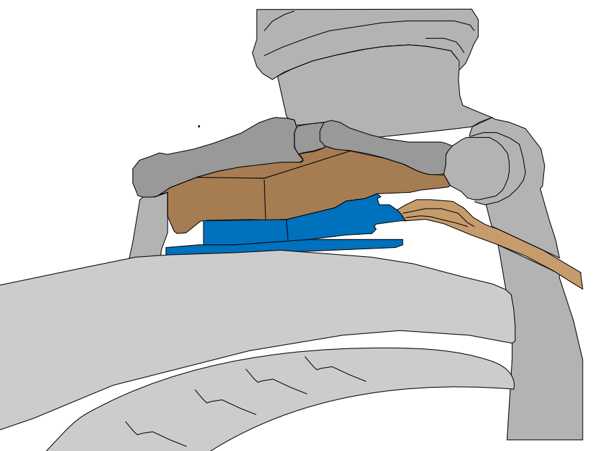
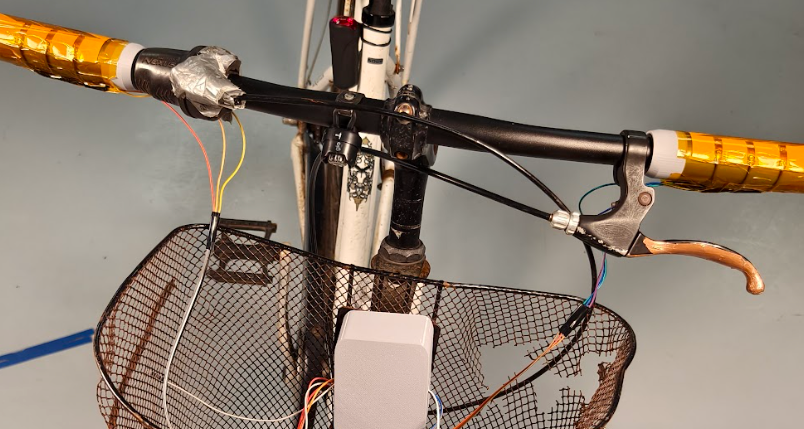
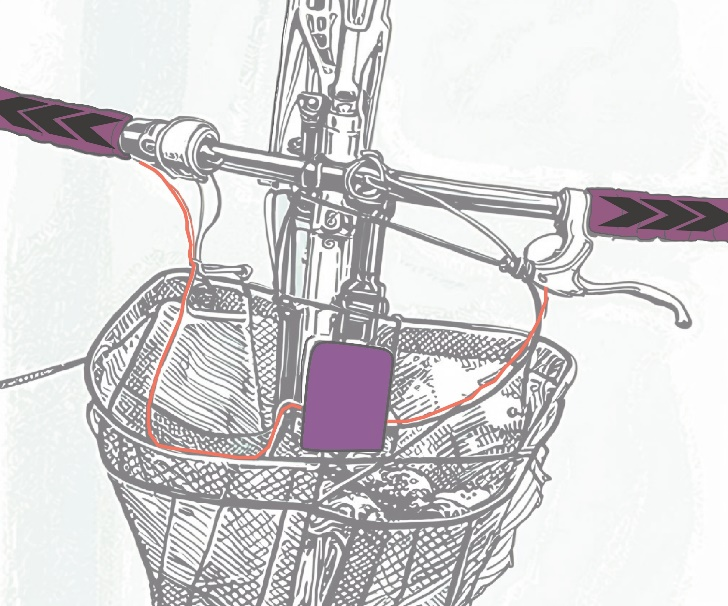
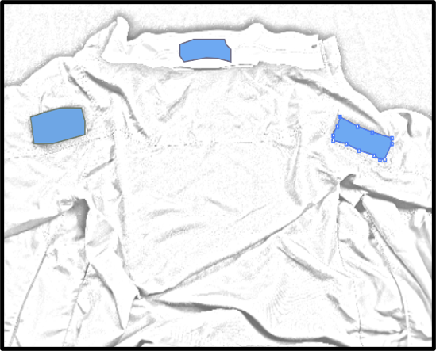
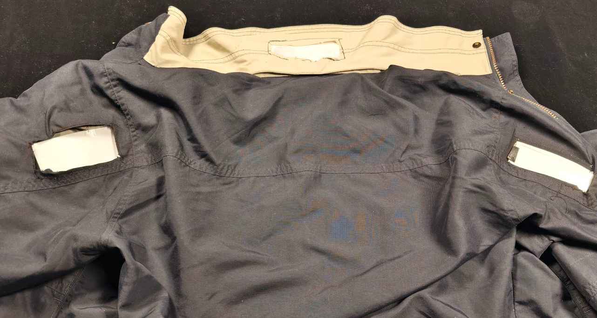
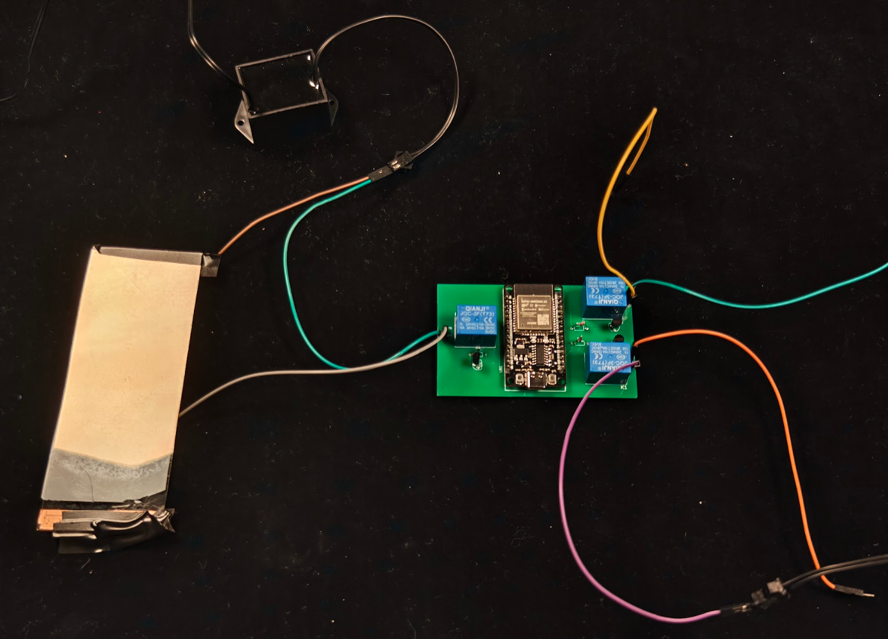
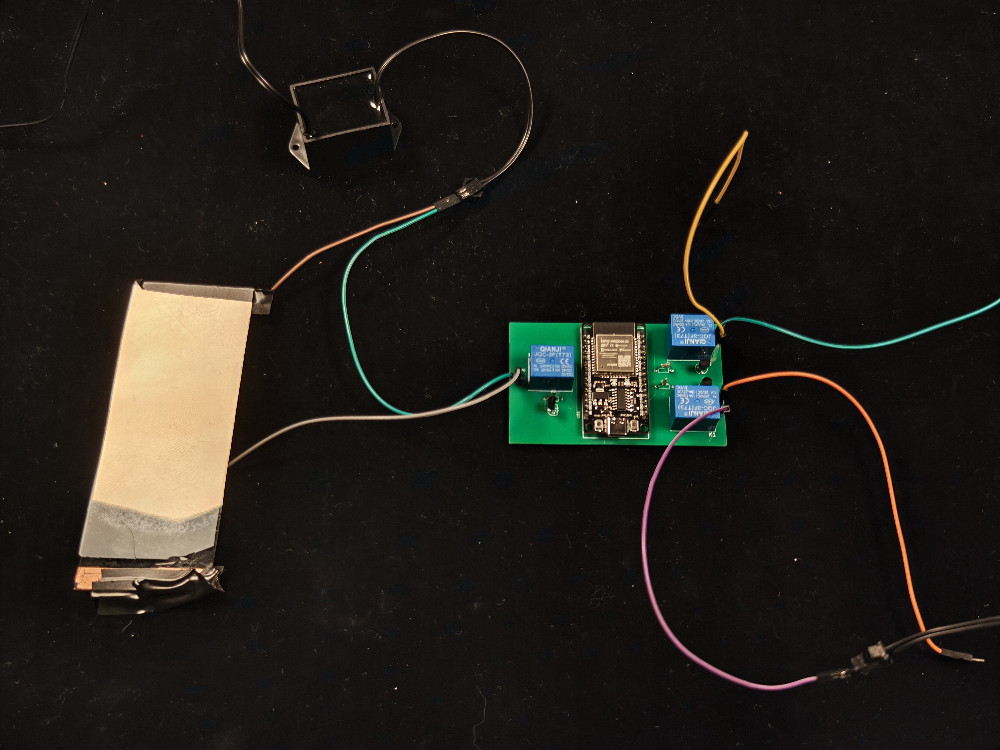
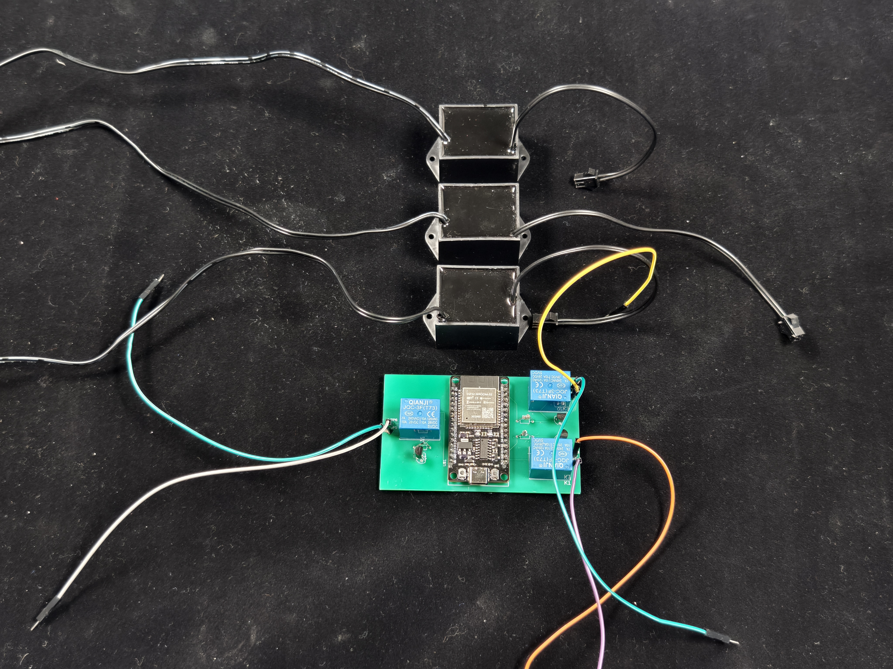
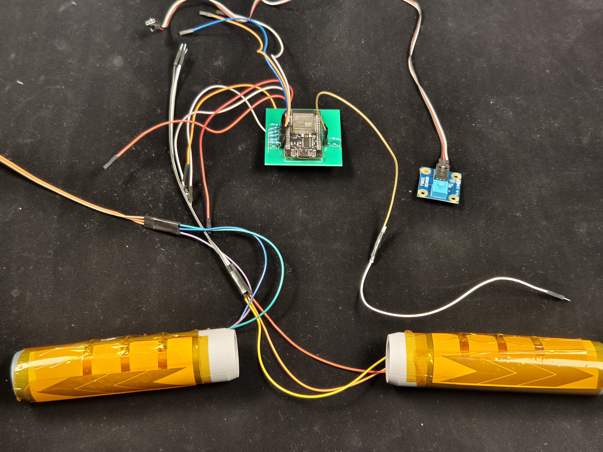
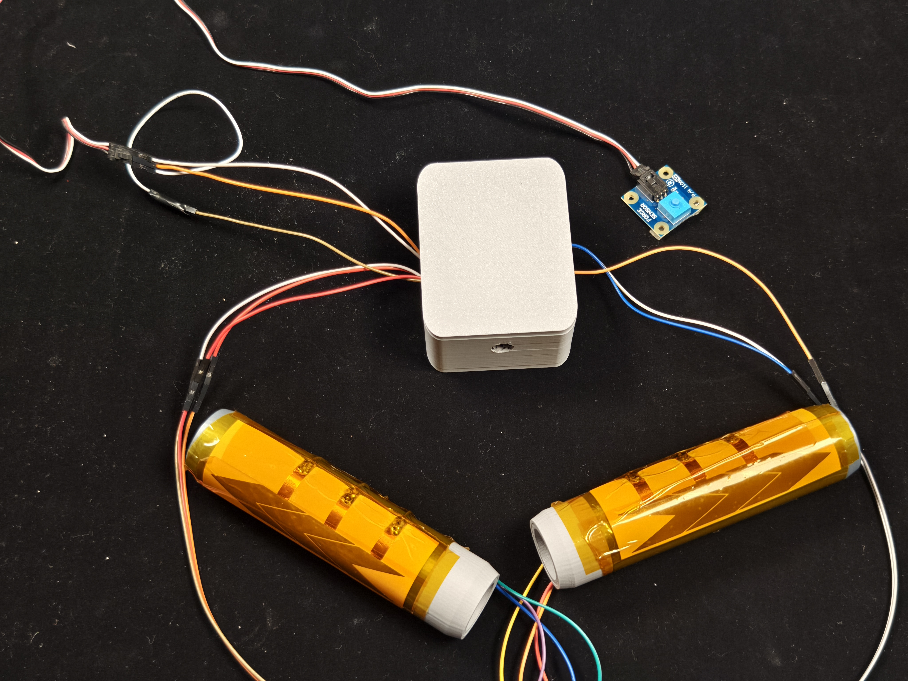

Hardware · Coursework · Team project
Uicycle: EL-Display Jacket for Safer Cycling
Uicycle is an EL-display jacket and bicycle-mounted sensing system that makes cyclist actions more visible in low-light conditions through responsive illumination.

Role
Hardware construction · sensor integration
Category
Wearable and embedded interaction
Format
Team and course project
Supervisor
Status
Course prototype
01Overview
Uicycle explored how a bicycle and a jacket could communicate a cyclist’s actions when visibility is limited, especially at night or in poor weather. The prototype combined capacitive input, brake-pressure sensing, and illuminated elements placed on the jacket and bike.
It is listed as a team/course project so that the scope and authorship remain clear. This page focuses on my contribution to construction, sensor integration, calibration, and system optimisation.
02Motivation
For cyclists, a turn or braking action can be difficult for others to see in low-light conditions. The project therefore focused on an intuitive interaction that could communicate intent without adding a separate study burden or requiring the rider to look away from the road.
The design connected physical actions to visible feedback: handlebar input and braking were translated into illuminated signals on the jacket and bicycle.

03Prototype work
My work involved constructing and optimising the prototype, integrating the force sensor and capacitive inputs, contributing to the PCB and clothing assembly, and calibrating the sensing baseline.
The prototype used an ESP32 to connect the sensing and feedback components, with Bluetooth supporting communication between the system parts. Iteration exposed practical issues such as sensor reliability, timing, and the fit between components and clothing.

04Evaluation focus
The project was evaluated through prototype testing and iteration, with attention to responsiveness, physical usability, and whether the system’s signals were understandable from the cyclist’s and observer’s points of view.
A key challenge was that capacitive sensing could distinguish touch from no-touch, but did not directly measure pressure. This shaped the later exploration of force sensing for braking.
05Reflection
The project strengthened my appreciation for the gap between detecting an action and designing a reliable interaction around that signal. Hardware work makes latency, noise, placement, calibration, and repair visible very quickly.
That perspective is useful in my current work with physiological sensing: the quality of an intelligent system depends not only on its model, but also on how a signal is collected and how its consequences reach the user.

06Tech Stack
Embedded hardware
ESP32, custom PCB, Bluetooth communication, and control electronics
Sensing
Force sensor for braking input, capacitive sensors for handlebar interaction, and baseline calibration
Feedback
EL displays/panels integrated into the jacket and bicycle for visible turn and braking signals
Prototyping
3D-printed parts, sponge cushioning, clothing assembly, PCB design, and iterative testing
Visual materials
07







Field test video 01 → Field test video 02 →